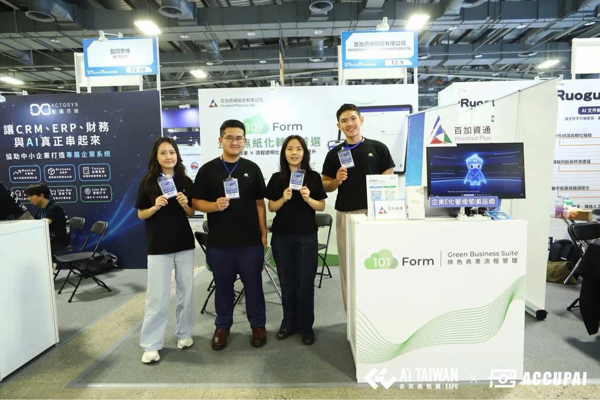
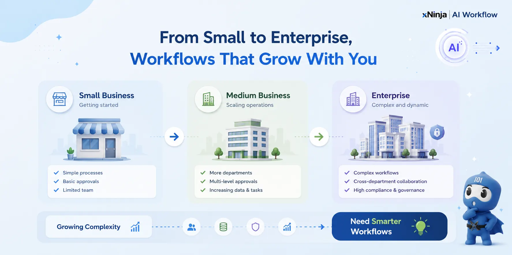

對於希望提升營運效率、減少人工作業並加速數位轉型的組織而言，簽核流程自動化正成為首要任務。
2026 AI 台灣未來商務展｜發掘企業對更聰明流程的需求
日期：2026 年 6 月 24–26 日
時間：9:00–17:00
地點：台北花博公園爭艷館
編者按：本文觀點來自 2026 AI 台灣未來商務展期間，造訪 xNinja 攤位的企業主、管理者與專業人士的交流分享。

在 2026 AI 台灣未來商務展，我們有機會與來自各產業的企業主、管理者與專業人士交流。透過與攤位訪客的對話，我們發現不論規模大小，組織都面臨一個共同挑戰：
隨著企業成長，簽核流程變得越來越複雜，維持效率、透明度與一致性也越來越困難。
許多企業正在尋找務實的解決方案，希望在不需要冗長或複雜導入專案的情況下，減少重複性工作、改善內部溝通並加速數位轉型。
xNinja AI Workhub 正是協助組織打造更聰明、更有效率營運模式的關鍵。在 xNinja AI Agent 的驅動下，xNinja AI Workhub 匯集了持續擴充的 Master Skills，協助員工簡化日常工作、提升生產力並推動數位轉型。
目前 xNinja 提供 xNinja.企業流程管理 與 xNinja.知識管理 等 Master Skills，並將持續發展更多 AI 能力，以支援未來不同的業務需求。
企業為何需要簽核流程自動化
傳統簽核流程通常仰賴電子郵件、紙本文件、試算表或人工追蹤。這些方式或許適用於小型團隊，但隨著組織擴張，往往變得缺乏效率。

簽核流程自動化如何改善日常營運
| 傳統簽核流程 | 簽核流程自動化 |
|---|---|
| 簽核申請透過紙本文件、電子郵件或聊天訊息傳送。 | 簽核申請透過結構化的數位流程管理。 |
| 員工需要人工追蹤簽核人。 | 自動通知協助提醒相關負責人。 |
| 難以掌握目前的簽核進度。 | 即時追蹤提升流程透明度。 |
| 各部門可能使用不同的作業方式。 | 標準化流程提升一致性。 |
| 文件可能遺失或難以搜尋。 | 數位紀錄更容易管理與取用。 |
| 人工輸入資料增加重複性工作。 | 自動化協助減少人工作業。 |
| 主管需花時間確認進度。 | 報表與追蹤提供更清楚的營運全貌。 |
透過流程自動化，企業可以：
- 標準化簽核程序
- 減少重複性的行政工作
- 提升流程透明度
- 加快決策速度
- 保存完整的數位紀錄
- 提升營運效率
為何各種規模的企業都需要流程自動化
不同組織依其規模與成長階段，面臨不同的營運挑戰。
| 企業規模 | 主要挑戰 | 需求 | xNinja 如何協助 |
|---|---|---|---|
| 小型企業 | 資源有限、仰賴人工作業，並擔心系統過於複雜 | 簡單展開數位轉型的方式 | xNinja 透過 AI 輔助表單建立與流程支援，加速數位化 |
| 中型企業 | 團隊擴大、協調工作增加，流程不一致 | 標準化並優化營運的方法 | xNinja 協助簡化業務流程、減少重複性工作 |
| 大型企業 | 營運複雜、資訊量龐大，且面臨知識管理挑戰 | 更聰明地管理流程與資訊 | xNinja 協助員工更快取得資訊、提升營運效率 |

為協助組織因應這些營運挑戰，xNinja AI Agent 透過 Master Skills 提供專業能力。
xNinja.企業流程管理 — 加速數位轉型
xNinja.企業流程管理 是 xNinja 的 Master Skills 之一，協助組織優化業務流程並加速數位轉型。
透過專屬的 AI 技術，xNinja 協助使用者：
+ 秒速建立電子表單
建立電子表單通常是業務流程數位化的第一步，但人工設計表單往往耗費大量時間與心力。
透過 xNinja，使用者能更快建立電子表單，縮短數位化週期。
商業價值
- 縮短表單建立時間
- 標準化業務文件
- 加速從人工作業轉換到數位流程
+ 智慧 OCR 文件辨識與資料擷取
許多組織仍花費大量時間，從紙本文件或掃描檔案中輸入資訊。
透過 OCR 與資料擷取能力，xNinja 能從影像或掃描文件中擷取資訊，協助員工完成電子表單。
商業價值
- 減少人工資料輸入
- 節省員工時間
- 降低人為錯誤
- 提升文件處理效率
xNinja.知識管理 — 讓組織知識更容易取得
xNinja.知識管理 是 xNinja 的另一項 Master Skill，協助組織管理並善用寶貴的內部知識。
隨著企業成長，重要資訊往往分散在不同的文件、部門與系統中，要快速找到正確資訊變得越來越困難。
透過專屬的 AI 技術，xNinja 協助使用者：
+ 智慧知識搜尋
員工可以直接提問，從組織知識中快速找到相關資訊。
商業價值
- 更快速地搜尋資訊
- 減少尋找文件的時間
- 更容易取得企業知識
+ 智慧摘要
閱讀冗長文件往往需要大量時間。
透過智慧摘要，xNinja 能將冗長文件轉換為精簡摘要，讓員工更快理解重要資訊。
商業價值
- 節省閱讀時間
- 提升資訊理解度
- 提高工作效率
+ 智慧推薦
xNinja 能提供建議，支援 SOP 改善與流程優化。
效益
- 找出改善機會
- 支援持續改善
- 協助組織更有效率地運作
xNinja AI Workhub 的未來
隨著業務需求持續演變，xNinja AI Workhub 將透過新的 Master Skills 與 AI 技術持續擴展，解決新興的營運挑戰並提升職場生產力。
從流程自動化、電子表單建立，到知識探索與流程改善，xNinja 持續擴充能力，協助企業更聰明地工作。
xNinja：以 AI 協助組織更聰明地工作
無論企業規模大小，每個組織都面臨相同的挑戰：
如何讓日常營運更快速、更簡單、更智慧？
透過 xNinja AI Workhub 與持續進化的 Master Skills，組織能釋放 AI 的力量，減少重複性工作、提升營運效率，讓員工專注於更高價值的工作。
無論您是剛展開數位轉型的小型企業、正在優化內部營運的成長型公司，或是管理複雜流程的大型企業，xNinja 都能協助您的組織邁向更聰明的未來。
用 xNinja 轉型您的企業營運
無論您的組織是剛展開數位轉型，或希望優化既有業務流程，xNinja AI Workhub 都能與您的企業一同成長。
準備好轉型您的企業營運了嗎？立即聯絡我們，了解 xNinja 如何協助您的組織自動化流程、管理知識，並以 AI 更聰明地工作。
展覽首日現場直擊
觀看我們在 2026 AI 台灣未來商務展的首日現場：
在 TikTok 觀看 — Hundred Plus TH